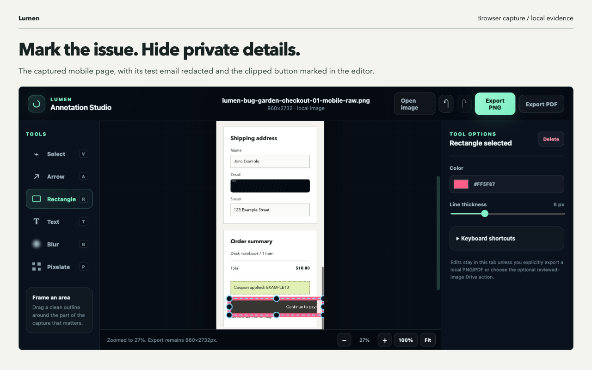

Clear page clutter
Sticky bars, cookie prompts, launchers, and late overlays are handled before saving.

Chrome extension for review work
Capture busy webpages as cleaner, safer review material. Clear floating UI, save the layouts that matter, mark sensitive details, and keep page context close to the image.
Product
What it does
Lumen focuses on the handoff moment: the image should be readable, the page should be documented, and recent captures should be easy to reuse.
Sticky bars, cookie prompts, launchers, and late overlays are handled before saving.
Capture desktop, tablet, and mobile layouts together for comparison work.
Scan visible private data, add manual boxes, and check the marked regions before saving.
Find saved runs and timed captures in a compact shelf with copy, open, and show actions.
Demo
The animated sample shows the capture pass removing page chrome, keeping the article, and marking sensitive details before the final save.
City Desk
Capture modes
Some pages need a quick full-page save. Others need a selected region, repeated checks, or a readable long-page handoff.
Drag around the section you need and save a focused crop with the page title attached.
Choose an interval, let Lumen collect changes, then review the captures in a small shelf.
Keep tall pages readable with stitched sections and a PDF-ready print sheet.
Workflow
Clean the page, load deferred media, and read page signals.
Review sensitive regions, manual boxes, focused crops, and long-page output.
Write images, focused crops, print sheets, and page context into local history.
Chrome Store
Store assets use the current popup and capture examples, so the product page matches what people install.


Use cases
Local
Use cleanup, notes, focused crops, page context, and local history.
Pro
Add responsive sets, auto-redaction, framed outputs, long-page tiles, and print sheets.
Team
Use timed captures, shared destinations, review handoff, and retention controls.
Privacy
Lumen stores settings and history in Chrome extension storage. Saved images go through Chrome Downloads, so you choose where the files live.